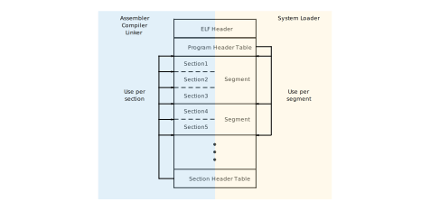

ELF binary format and vmlinux structure
At the time of writing this document, the kernel used to boot a VM in ToyVMM assumes an ELF-formatted vmlinux.bin. Therefore, within the VMM, it's necessary to interpret the ELF format and load the kernel into the memory area prepared for the VM appropriately. This process is implemented in the rust-vmm/linux-loader crate. While ToyVMM abstracts this implementation by using the crate, it is essential to understand how it works. Hence, this section provides an explanation of loading ELF binaries.
ELF Binary Format
The ELF file format consists of the following components:
As shown above, the ELF file format primarily consists of an ELF Header, Program Header Table, Segments (Sections), and Section Header Table. When used by a system loader, ELF files treat the entries in the Program Header Table as a collection of Segments, while compilers, assemblers, and linkers treat entries in the Section Header Table as a collection of Sections.
The ELF Header contains overall information about the ELF file. Each entry in the Program Header Table, known as a Program Header, holds header information about the corresponding Segment. Therefore, the number of Program Headers corresponds to the number of Segments. Furthermore, each Segment can be divided into multiple Sections, and the Section Header Table contains header information for these Sections.
The ELF Header always starts at the beginning of the file offset and holds information necessary for reading ELF data. Here are some excerpts from the ELF Header. For a comprehensive overview, please refer to the Man page of ELF.
| Attribute | Meaning |
|---|---|
e_entry | Virtual address representing the entry point to start this ELF process |
e_phoff | File offset value to the location of the Program Header Table |
e_shoff | File offset value to the location of the Section Header Table |
e_phentsize | Size of one entry in the Program Header Table |
e_phnum | Number of entries in the Program Header Table |
e_shentsize | Size of one entry in the Section Header Table |
e_shnum | Number of entries in the Section Header Table |
From the above excerpts, you can see that it's possible to extract information about each entry in the Program Header and Section Header.
Now, let's focus on the contents of the Program Header.
| Attribute | Meaning |
|---|---|
p_type | Represents the type of the Segment pointed to by this Program Header, providing hints on how to interpret it |
p_offset | File offset value to the Segment pointed to by this Program Header |
p_paddr | In systems where physical addresses are meaningful, this value points to the physical address of the Segment pointed to by this Program Header |
p_filesz | Byte size of the file image of the Segment pointed to by this Program Header |
p_memsz | Byte size of the memory image of the Segment pointed to by this Program Header |
p_flags | Flags that indicate information about the Segment pointed to by this Program Header, such as executable, writable, and readable |
As mentioned earlier, by interpreting the contents of the Program Header, you can obtain information about the position, size, and how to interpret the respective segment. For our purposes, understanding the structure of the Program Header is sufficient, so we will omit details about the Section Header and other components.
Now, the vmlinux.bin we will be working with has five Program Header entries, with the first four having a p_type value of PT_LOAD, and the last one having PT_NOTE. Let's extract some details about PT_LOAD and PT_NOTE from the Man page of ELF:
p_type | Meaning |
|---|---|
PT_LOAD | Represents a loadable Segment described by p_filesz and p_memsz. |
PT_NOTE | Contains auxiliary information for location and size. |
In the case of PT_LOAD, the byte sequence of the file is associated with the beginning of the memory segment. You can load the segment's contents into memory by copying the data from the address corresponding to the segment's memory address, calculated using p_offset, for the size specified by p_memsz.
With this minimal knowledge of ELF, let's proceed to analyze the content of vmlinux.bin.
Analyzing vmlinux
Let's analyze the content of vmlinux now. Some of the information we'll extract will be crucial for future tasks. The readelf command is a powerful tool for dumping ELF-formatted files in a human-readable format. In this section, we will display the ELF Header (-h) and Program Header (-l) of vmlinux.bin.
$ readelf -h -l vmlinux.bin
ELF Header:
Magic: 7f 45 4c 46 02 01 01 00 00 00 00 00 00 00 00 00
Class: ELF64
Data: 2's complement, little endian
Version: 1 (current)
OS/ABI: UNIX - System V
ABI Version: 0
Type: EXEC (Executable file)
Machine: Advanced Micro Devices X86-64
Version: 0x1
Entry point address: 0x1000000
Start of program headers: 64 (bytes into file)
Start of section headers: 21439000 (bytes into file)
Flags: 0x0
Size of this header: 64 (bytes)
Size of program headers: 56 (bytes)
Number of program headers: 5
Size of section headers: 64 (bytes)
Number of section headers: 36
Section header string table index: 35
Program Headers:
Type Offset VirtAddr PhysAddr
FileSiz MemSiz Flags Align
LOAD 0x0000000000200000 0xffffffff81000000 0x0000000001000000
0x0000000000b72000 0x0000000000b72000 R E 0x200000
LOAD 0x0000000000e00000 0xffffffff81c00000 0x0000000001c00000
0x00000000000b0000 0x00000000000b0000 RW 0x200000
LOAD 0x0000000001000000 0x0000000000000000 0x0000000001cb0000
0x000000000001f658 0x000000000001f658 RW 0x200000
LOAD 0x00000000010d0000 0xffffffff81cd0000 0x0000000001cd0000
0x0000000000133000 0x0000000000413000 RWE 0x200000
NOTE 0x0000000000a031d4 0xffffffff818031d4 0x00000000018031d4
0x0000000000000024 0x0000000000000024 0x4
Section to Segment mapping:
Segment Sections...
00 .text .notes __ex_table .rodata .pci_fixup __ksymtab __ksymtab_gpl __kcrctab __kcrctab_gpl __ksymtab_strings __param __modver
01 .data __bug_table .vvar
02 .data..percpu
03 .init.text .altinstr_aux .init.data .x86_cpu_dev.init .parainstructions .altinstructions .altinstr_replacement .iommu_table .apicdrivers .exit.text .smp_locks .data_nosave .bss .brk
04 .notes
From the ELF Header, we can see that the "Entry point address" (e_entry value) represents the address (0x0100_0000) where the ELF process starts, which is essential. This value is returned as the result of loading the kernel using rust-vmm/linux-loader, and it's also the value to set in the vCPU's eip (instruction pointer) to start the process.
The e_phnum value in the ELF Header (Number of program headers) is 5, which matches the number of Program Headers (Program Header Table entries). The Program Headers are displayed next, with the first four having a Type of LOAD, and the last one being NOTE. Additionally, the first and fourth LOAD entries are marked as executable, indicating that executable code is present around these segments. The first entry is especially important as it likely corresponds to the entry point of the kernel's executable code.
Implementation in ToyVMM.
In ToyVMM, the loading of vmlinux is done within the load_kernel function in src/builder.rs. This function takes boot_config information, which includes the path to the kernel file, and the memory (guest_memory) allocated for the VM.
Within load_kernel, rust-vmm/linux-loader's Elf structure (imported as Loader) is used. This structure implements the KernelLoader trait, and its load function is responsible for loading ELF-formatted kernels into guest_memory. Here's an excerpt from the code:
#![allow(unused)] fn main() { use linux_loader::elf::Elf as Loader; let entry_addr = Loader::load::<File, memory::GuestMemoryMmap>( guest_memory, None, &mut kernel_file, Some(GuestAddress(arch::x86_64::get_kernel_start())), ).map_err(StartVmError::KernelLoader)?; }
Now, let's delve deeper into the implementation of linux-loader. In linux-loader, the KernelLoader trait is defined, and its definition looks like this:
#![allow(unused)] fn main() { /// Trait that specifies kernel image loading support. pub trait KernelLoader { /// How to load a specific kernel image format into the guest memory. /// /// # Arguments /// /// * `guest_mem`: [`GuestMemory`] to load the kernel in. /// * `kernel_offset`: Usage varies between implementations. /// * `kernel_image`: Kernel image to be loaded. /// * `highmem_start_address`: Address where high memory starts. /// /// [`GuestMemory`]: https://docs.rs/vm-memory/latest/vm_memory/guest_memory/trait.GuestMemory.html fn load<F, M: GuestMemory>( guest_mem: &M, kernel_offset: Option<GuestAddress>, kernel_image: &mut F, highmem_start_address: Option<GuestAddress>, ) -> Result<KernelLoaderResult> where F: Read + Seek; } }
As inferred from the comments, this trait requires the load function to be implemented, which should load a specific kernel image format into the guest memory.
In the case of linux-loader, there are implementations for x86_64 that support loading ELF format kernels, and it also appears to have implementations for bzImage format kernels. However, for this discussion, let's focus on the ELF implementation.
The load function, which is expected to be implemented for ELF, performs the following steps:
- Extract the data from the beginning of the ELF file up to the size of the ELF header.
- Create an instance of the
KernelLoaderResultstruct namedloader_resultand store the value of the ELF header'se_entryfield in itskernel_loadmember. This value represents the address where the system will initially transfer control, which is essentially the starting point of the process. - Seek within the ELF file to the address where the program header table is located (determined by
e_phoff), and then loop over all program headers (up toe_phnum) in the ELF file. - While looping over the program headers, perform the following actions:
- Seek within the ELF file to the location of the segment corresponding to the currently inspected program header (determined by
p_offset). - Write the data from
kernel_image(which has already been seeked to the beginning of the segment's data) into the guest memory, starting from the address calculated frommem_offsetto the size of the segment (p_filesz). - Update the value of
kernel_end(the address of the end of the loaded segment in GuestMemory) and store the larger value betweenloader_result.kernel_endand the newly calculated value inloader_result.kernel_end.
- Seek within the ELF file to the location of the segment corresponding to the currently inspected program header (determined by
- After looping through all program headers, return
loader_resultas the final result.
This code essentially interprets and loads ELF files according to the ELF format. The returned KernelLoaderResult struct contains important information about the starting and ending positions of the kernel in GuestMemory, with the starting position being particularly crucial for use in Setup registers of vCPU.